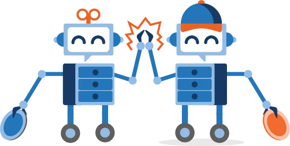
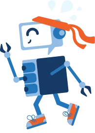
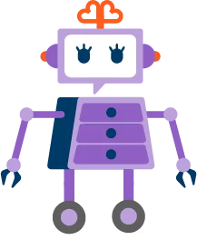
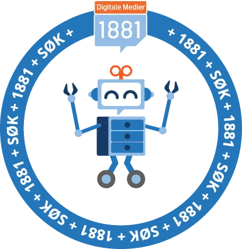
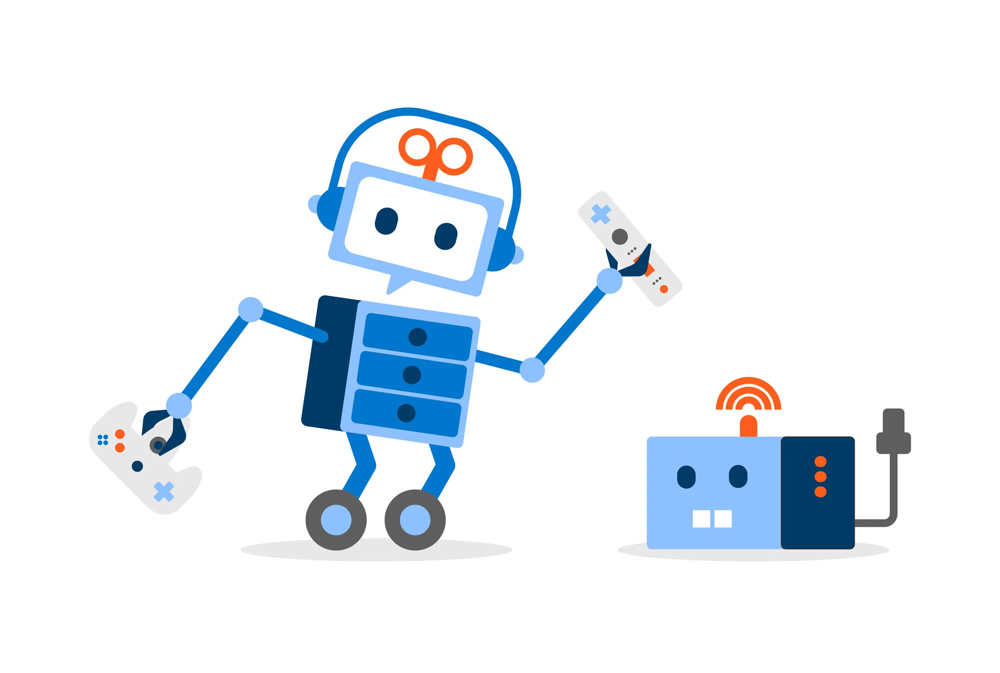
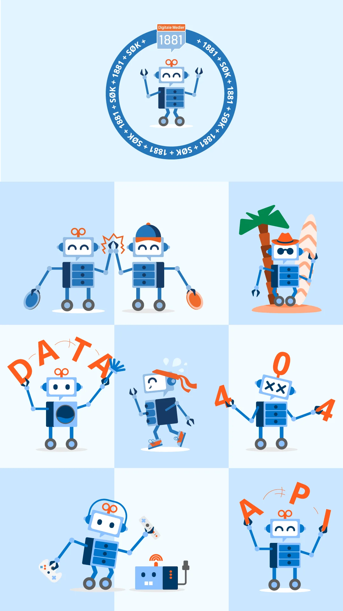

Selected work — Brand design & illustration
Exploring how an established brand character can evolve across new contexts and experiences.
An ongoing exploration of how an existing brand character can grow through new expressions, themes and use cases — while keeping a consistent visual identity.
01 — Overview
Strong brand assets become more valuable when they can adapt to new situations without losing their identity.
This ongoing project explores how an existing brand character can be extended through new variations, expressions and scenarios while maintaining a consistent visual language.
Rather than redesigning the character itself, the work focuses on expanding its possibilities — exploring how a recognisable brand asset can support communication across different contexts.
02 — The challenge
A well-established character creates recognition and familiarity. However, communication needs evolve over time.
New campaigns, themes, services and situations require new visual assets while still feeling connected to the existing identity. The challenge became:
03 — My role
My contribution focused on exploring and creating new character variations based on the existing visual identity. This included:
The work was iterative and continues to evolve as new opportunities emerge.
04 — Design exploration
A key focus has been preserving recognisable elements while introducing new ideas. Throughout the process I have explored:
Using body language, accessories and posture to communicate different situations.
Adapting the character to seasonal events, campaigns and special occasions.
Exploring how the character can support communication through visual narratives.
Ensuring that new variants still feel like part of the same family.






In use
The character has to hold up far beyond the screen — on printed roll-ups, on apparel, and inside product interfaces. Mockups showing it in context are on the way.
05 — A living system
One of the most interesting aspects of this work is that there is no final version.
Each new variation becomes part of a growing collection that can support future communication needs.
Rather than viewing the character as a fixed asset, I see it as a living system that can continue evolving while remaining recognisable.
06 — Reflection
This project reinforced the importance of working within established design constraints.
The most interesting challenge was not creating something entirely new, but finding ways to expand an existing visual language while preserving the qualities that made it recognisable in the first place.
The work demonstrates how consistency and creativity can coexist when developing brand assets over time.